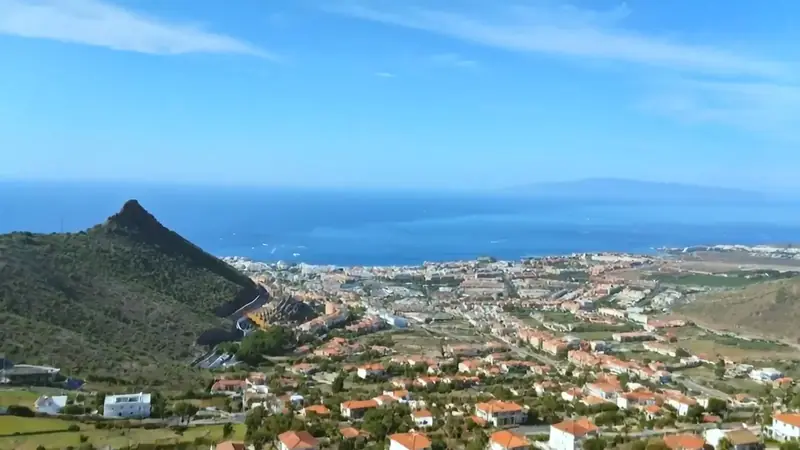
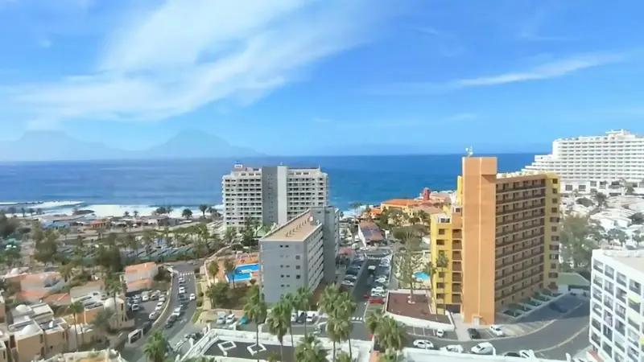
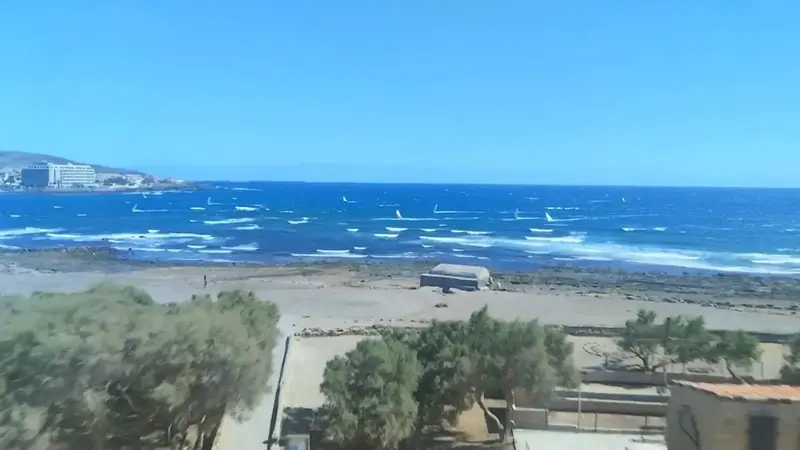
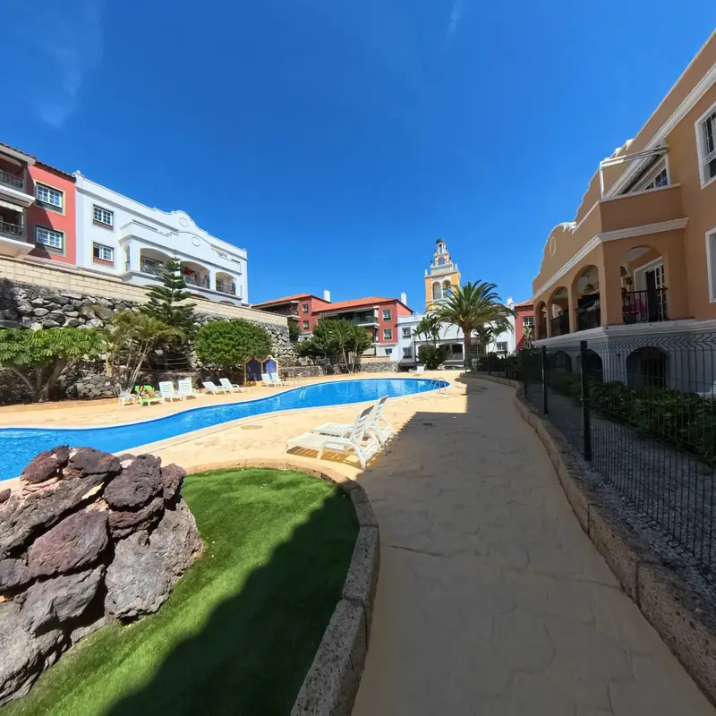
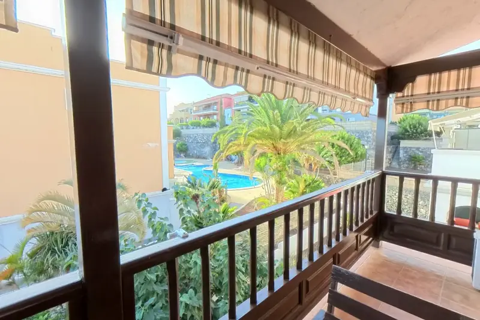

Carta de la asesora
Octubre deja un sur con precios asentados y mucha diferencia por zonas
Octubre cierra con el sur de Tenerife en cifras sólidas. Según idealista, Adeje marca 4.759 €/m² (+1 % anual), Arona 4.082 €/m² (+1,3 %) y Guía de Isora 4.563 €/m² (+2,3 %). A escala nacional, la vivienda usada alcanza un nuevo máximo, con un +11,2 % anual. Los precios están asentados y varían mucho entre zonas, y ahí está la información útil de esta quincena.
Si estás pensando en vender, el contexto ayuda: idealista señala que la oferta de vivienda en venta se reduce un 9 % en el tercer trimestre, así que una casa bien preparada y bien posicionada destaca. Recomendamos empezar por una valoración de tu zona concreta, no de la media del municipio: entre Playa de las Américas (5.959 €/m²) y San Miguel de Abona (2.031 €/m²) hay casi 3.930 €/m² de diferencia.
Para quien compra o invierte, la clave está en elegir bien el punto de entrada. Valle San Lorenzo (2.628 €/m², +11 % anual) y San Isidro (2.490 €/m², +11,4 %) combinan precio contenido y avance claro. Con el euríbor en el 3,23 % a cierre de octubre, conviene cerrar la financiación antes de visitar y negociar con las cifras claras.
En Villa's Properties te acompañamos en ambos lados: valoración gratuita y sin compromiso para propietarios, y selección de viviendas y asesoramiento de inversión para compradores. Trabajamos zona a zona, con datos y trato directo, para que cada decisión parta de información fiable y no de intuiciones.
«En el sur de Tenerife el valor lo marca la zona, no el municipio: conocer tu calle es conocer tu precio.»
Carta y recomendaciones de nuestra asesora, municipio a municipio con mapas y gráficos, mapa de oportunidades para el inversor y conclusiones.
La quincena en tres cifras
Fuente: idealista, octubre 2026.
El dato de la quincena
Precio anual de la vivienda usada en España, octubre 2026 (idealista)
Si vendes
Un mercado en máximos favorece a quien vende, pero cada zona tiene su ritmo: fijar el precio con datos de tu calle evita esperas innecesarias.
Si compras o inviertes
El avance nacional no se reparte por igual: en el sur conviene comparar zona a zona y entrar donde el precio por metro cuadrado aún es accesible.
Un sur con precios muy distintos según la zona
Idealista sitúa octubre de 2026 en 4.759 €/m² para Adeje, 4.563 para Guía de Isora, 4.082 para Arona y 3.673 para Santiago del Teide; Granadilla de Abona (3.005) y San Miguel de Abona (3.153) completan el abanico. Esa horquilla de casi 1.800 €/m² entre municipios, y mucho mayor entre zonas, es la razón de valorar y comprar siempre con datos de la calle concreta.
| Municipio | Precio medio | Subida anual |
|---|---|---|
| Adeje | 4.759 €/m² | +1 % |
| Guía de Isora | 4.563 €/m² | +2,3 % |
| Arona | 4.082 €/m² | +1,3 % |
| Santiago del Teide | 3.673 €/m² | — |
| San Miguel de Abona | 3.153 €/m² | — |
| Granadilla de Abona | 3.005 €/m² | +2,5 % |
Precio medio de oferta por m², idealista, octubre 2026. «—»: sin subida que destacar este mes.
Municipio a municipio
Adeje: el referente prémium del sur

Municipio de mayor precio medio del sur: 4.759 €/m² en octubre (idealista), con Costa Adeje en 5.257 y Playa Paraíso en 4.652, frente a Tijoco en 2.895. Un mercado con perfiles muy diferenciados.
Si vendes: Casco Urbano avanza un 7,8 % anual y Tijoco un 7,2 %. En primera línea, la diferenciación está en la orientación, las vistas y la reforma, y ahí conviene apoyar el precio.
Si compras o inviertes: Tijoco (2.895 €/m²) y Casco Urbano (3.520 €/m²) son los puntos de entrada más accesibles de Adeje, con avances anuales del 7,2 % y el 7,8 %. Playa Paraíso suma un 3,3 % anual.
Si vendes en Costa Adeje, pide una valoración que compare con tu urbanización y no con el municipio. Si compras, visita primero Casco Urbano y Tijoco para tener una referencia de entrada.
Cuánto vale una vivienda en Adeje · Comprar casa en Adeje
Arona: costa consolidada y valles con recorrido

4.082 €/m² de media (+1,3 % anual). Playa de las Américas (5.959) y Los Cristianos (4.810) marcan el techo; Valle San Lorenzo (2.628) y El Fraile (2.584) ofrecen la entrada.
Si vendes: Valle San Lorenzo sube un 11 % anual y Costa del Silencio-Las Galletas un 4,5 %: quien vende allí cuenta con un contexto de precios al alza. En la costa, el estado de la vivienda pesa más que el barrio.
Si compras o inviertes: Valle San Lorenzo reúne 2.628 €/m² y un +7,6 % trimestral: es la zona de entrada con más avance de Arona. Palm Mar (+4,6 % anual) ofrece una alternativa más cercana al mar.
Propietarios de Valle San Lorenzo: es buen momento para pedir una valoración actualizada. Compradores: comparad Valle San Lorenzo, El Fraile y Las Rosas antes de decidir y cerrad primero la financiación.
Cuánto vale una vivienda en Arona · Comprar casa en Arona
Granadilla de Abona: precio accesible y avance sostenido

3.005 €/m² de media en octubre, con un avance anual del 2,5 % (idealista). El Médano (3.889) es la zona más cotizada; Granadilla (2.129) y San Isidro (2.490) concentran los precios de entrada.
Si vendes: San Isidro (+11,4 % anual) y Granadilla (+8,8 %) lideran los avances anuales. Si tu vivienda está allí, la evolución de los últimos doce meses respalda una valoración razonada y firme.
Si compras o inviertes: Granadilla, a 2.129 €/m², es uno de los precios de entrada más bajos del sur. San Isidro, con 2.490 €/m², suma además el mayor avance anual del municipio.
Si compras, visita Granadilla y San Isidro y compáralos con El Médano para entender qué pagas por cada perfil. Si vendes, pídenos un estudio comparado de tu núcleo concreto.
Cuánto vale una vivienda en Granadilla de Abona · Comprar casa en Granadilla de Abona
San Miguel de Abona: entrada asequible y entorno de golf

3.153 €/m² de media en octubre (idealista). Golf del Sur-Amarilla Golf (3.640) es la zona de mayor precio; Las Chafiras (2.813), Guargacho (2.515) y el casco de San Miguel (2.031) ofrecen valores de entrada.
Si vendes: Golf del Sur-Amarilla Golf avanza un 5 % anual y San Miguel de Abona un 2,2 %. Para vender, conviene destacar entorno, accesos y cercanía a la costa.
Si compras o inviertes: El casco de San Miguel, a 2.031 €/m², es el punto de entrada más bajo de los seis municipios en octubre. Golf del Sur, con +5 % anual, encaja con quien busca entorno de golf y servicios.
Compradores: pedidnos un comparativo entre Golf del Sur, Las Chafiras y el casco antes de visitar. Propietarios: valorad con datos de vuestra urbanización, porque las diferencias dentro del municipio son notables.
Cuánto vale una vivienda en San Miguel de Abona · Comprar casa en San Miguel de Abona
Guía de Isora: alta gama con impulso mensual
4.563 €/m² de media, con un +1,5 % mensual en octubre, el mayor de los seis municipios (idealista). Abama (7.127 €/m²) es la zona más alta del sur; Playa San Juan (4.120) crece un 8,3 % anual.
Si vendes: Playa San Juan suma un 8,3 % anual y un 7 % trimestral: buena base para una valoración firme. En Abama, el comprador valora el producto único, así que la presentación profesional marca la diferencia.
Si compras o inviertes: Guía de Isora (3.059 €/m²) y Playa San Juan (4.120) ofrecen escalones de entrada distintos dentro de un mismo municipio, con avances anuales del 5,6 % y el 8,3 %. Abama es un segmento de patrimonio, no de entrada.
Si vendes en Playa San Juan, aprovecha su impulso con una valoración actualizada. Si compras en Abama, compara siempre con producto equivalente y revisa comunidad y servicios antes de ofertar.
Cuánto vale una vivienda en Guía de Isora · Comprar casa en Guía de Isora
Santiago del Teide: Los Gigantes y su perfil propio
3.673 €/m² de media en octubre (idealista). Acantilados de Los Gigantes (4.468) tiene el perfil más exclusivo; Puerto de Santiago (3.618) ofrece un núcleo residencial con un precio de entrada más accesible.
Si vendes: Con dos zonas bien diferenciadas, el precio depende de la ubicación y el entorno. En Los Gigantes conviene apoyarse en producto comparable y buena presentación; en Puerto de Santiago, en el estado y la reforma.
Si compras o inviertes: Los Gigantes (4.468 €/m²) frente a Puerto de Santiago (3.618) permite elegir entre perfil exclusivo y entrada más accesible. Compara siempre el precio con el estado real del inmueble.
Antes de ofertar, visita ambas zonas en horarios distintos y pídenos comparables recientes. Si vendes, una valoración por calle evita fijar el precio con la media del municipio.
Cuánto vale una vivienda en Santiago del Teide · Comprar casa en Santiago del Teide
Puntos de entrada que ganan terreno
Para el inversor destacan Valle San Lorenzo (2.628 €/m², +11 % anual), San Isidro (2.490 €/m², +11,4 %), Granadilla (2.129 €/m², +8,8 %) y Tijoco (2.895 €/m², +7,2 %), según idealista en octubre de 2026. Son zonas con precio de entrada contenido y avance anual claro. Cada operación exige revisar estado, comunidad y documentación; te ayudamos a hacerlo.
- San Miguel de Abona (San Miguel de Abona): 2.031 €/m², +2,2 % en un año
- Granadilla (Granadilla de Abona): 2.129 €/m², +8,8 % en un año
- San Isidro (Granadilla de Abona): 2.490 €/m², +11,4 % en un año
- Cabo Blanco (Arona): 2.573 €/m², +6,4 % en un año
- El Fraile (Arona): 2.584 €/m², +2,9 % en un año
- Valle San Lorenzo (Arona): 2.628 €/m², +11 % en un año
Zonas por debajo de 2.700 €/m² con subida anual. Fuente: idealista, octubre 2026.
Lo que se mueve
La vivienda usada alcanza nuevo máximo en octubre, con un +11,2 % anual
Para quien vende, es un contexto de precios firmes. Para quien compra, recuerda que la media nacional no sustituye al análisis de cada zona del sur.
El euríbor cierra octubre en el 3,23 %
Quien compra con hipoteca debe simular la cuota con este nivel y cerrar la financiación antes de ofertar. Quien vende, tener presente que muchos compradores parten de su capacidad de financiación.
Compraventas y firma de hipotecas suben en agosto, según el INE
Hay actividad real de compradores con financiación. Quien vende gana al presentar la vivienda bien y con precio argumentado; quien compra debe llegar con la aprobación hipotecaria preparada.
La demanda extranjera de vivienda marca máximos, por encima del 16 % de las compras
Para el propietario del sur, amplía el abanico de compradores potenciales. Para quien invierte, conviene cuidar documentación y acompañamiento jurídico desde el primer día.
La oferta de vivienda en venta se reduce un 9 % en el tercer trimestre
Con menos viviendas en el mercado, destacan las que están bien preparadas. Quien compra debe decidir con agilidad cuando encuentra la que encaja con su plan.
Cómo comprobar si una vivienda tiene cédula de habitabilidad
Vendedores: reunid este documento antes de salir al mercado para agilizar la operación. Compradores: pedidlo siempre antes de ofertar; nosotros lo revisamos con vosotros.
Recomendaciones de la asesora
Qué recomendamos hacer en esta quincena
Estas son las acciones que proponemos a propietarios y a compradores, ordenadas por prioridad y apoyadas en los datos de octubre de idealista y en nuestra experiencia en el sur.
Si vendes
En el sur, la distancia entre zonas supera los 3.900 €/m² (Playa de las Américas, 5.959; San Miguel de Abona, 2.031). Pide una valoración que compare con tu entorno inmediato. La nuestra es gratuita y sin compromiso.
Cédula de habitabilidad, nota simple, certificado energético y recibos de comunidad. Un expediente completo agiliza la oferta y evita retrasos en la firma. Para dudas fiscales sobre la venta, consulta con tu asesor fiscal o con nosotros.
Idealista señala una oferta en venta un 9 % menor en el tercer trimestre. Con buenas fotos, precio bien argumentado y visitas ordenadas, tu vivienda puede destacar entre menos competidoras.
Orden, luz y reportaje profesional marcan el primer contacto. Hablamos contigo para decidir qué mejoras merece la pena hacer antes de salir al mercado y cuáles no.
Si compras o inviertes
Con el euríbor en el 3,23 % a cierre de octubre, simula cuotas y pide aprobación previa. Así negocias con un margen claro y reaccionas rápido cuando aparece la vivienda adecuada.
Valle San Lorenzo (2.628 €/m²) y San Isidro (2.490 €/m²) avanzan un 11 % y un 11,4 % anual. Compáralas con Costa Adeje o Playa de las Américas según busques entrada, residencia o patrimonio.
Antes de ofertar, comprueba cédula de habitabilidad, cargas, derramas y estado de las instalaciones. Nuestro equipo te acompaña en esa revisión para que el precio refleje lo que realmente compras.
Impuestos y costes dependen de cada caso. Consulta con tu asesor fiscal o con nosotros antes de firmar, y define tu horizonte de inversión sin esperar resultados garantizados.

Conclusiones
Lo que debes llevarte de esta quincena
- El sur tiene precios muy distintosAdeje marca 4.759 €/m² y Granadilla de Abona 3.005 €/m² en octubre (idealista). La zona concreta decide el valor más que el municipio.
- Guía de Isora toma impulsoRegistra un +1,5 % mensual y 4.563 €/m². Playa San Juan crece un 8,3 % anual, mientras Abama (7.127 €/m²) se consolida como segmento de patrimonio.
- Entrada asequible con avance claroValle San Lorenzo (+11 %) y San Isidro (+11,4 %) crecen en tasa anual desde precios de 2.628 y 2.490 €/m².
- Menos oferta, mejor contexto para venderLa oferta en venta se reduce un 9 % en el tercer trimestre (idealista). Una vivienda bien preparada y bien valorada destaca.
- La financiación se decide antes de visitarEl euríbor cierra octubre en el 3,23 %. Simular la cuota y obtener la aprobación previa evita sorpresas en la negociación.
- La evolución mensual de Guía de Isora tras su +1,5 % de octubre.
- Cómo evolucionan Valle San Lorenzo y San Isidro respecto a su avance anual del 11 %.
- El nivel del euríbor y su efecto en las cuotas de las hipotecas variables.
Gracias por leernos. Si tienes una vivienda en el sur de Tenerife, te preparamos una valoración gratuita y sin compromiso con datos de tu zona. Si piensas comprar o invertir, te proponemos una selección de viviendas y una conversación sincera sobre objetivos y financiación. Estamos aquí para ayudarte. Valeria Villa, CEO de Villa's Properties.
Déjanos tu email o tu WhatsApp al descargar el PDF y te llegará el siguiente, con los datos nuevos de tu zona.
Fuentes: idealista (octubre 2026, precios por municipio y zona; y las noticias citadas), INE, Portal Estadístico del Notariado, El Mundo y Expansión. Las noticias están resumidas por Villa’s Properties y enlazan al original. Este análisis es orientativo y no sustituye una valoración profesional de cada vivienda.